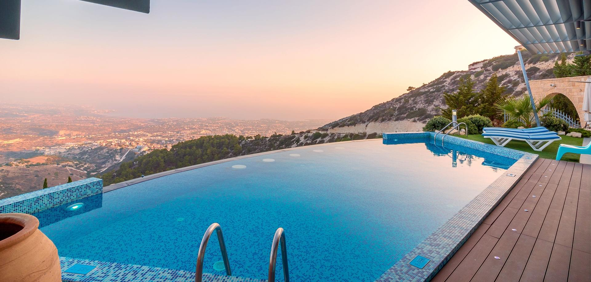

Consejos para tener una alberca en tu casa sin gastar demasiado

Tener una alberca en casa es un sueño para muchos, pero a menudo se piensa que es un lujo inalcanzable. Sin embargo, con algunos consejos y estrategias, es posible disfrutar de una piscina sin gastar demasiado. En este artículo, exploraremos formas de construir y mantener una alberca de manera económica, desde la elección del diseño hasta el mantenimiento eficiente del agua.
Una de las primeras consideraciones es el tamaño y la forma de la alberca. Optar por un diseño más pequeño o una forma simple puede reducir significativamente los costos de construcción. Además, elegir materiales duraderos y de bajo mantenimiento puede ahorrar dinero a largo plazo. Por ejemplo, las piscinas de fibra de vidrio o las de vinilo suelen ser más económicas que las de concreto.